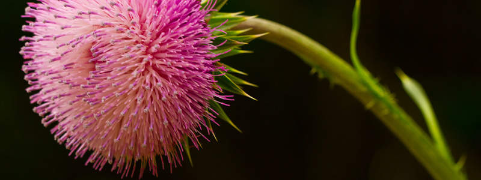

Le programmeur

Le programmeur est un créateur d'univers dont il est seul responsable. Des univers d'une complexité virtuellement infinie peuvent être créés sous la forme de programmes informatiques. (Joseph Weizenbaum)

Le programmeur est un créateur d'univers dont il est seul responsable. Des univers d'une complexité virtuellement infinie peuvent être créés sous la forme de programmes informatiques. (Joseph Weizenbaum)
Les gens ont construit des champs, parce qu’il était fatigant de chasser tous les jours sans résultats.
Les gens ont construit des puits, parce qu’il était fatigant d’aller tout le temps chercher de l’eau à la rivière.
L’évolution de l’humanité a toujours été guidé par le sentiment de rendre les choses plus facile.
Bien sûr, il en va de même pour la guerre. Une guerre sans effort est une guerre correcte.
– Ikta Solork –
Même si parfois c’est compliqué et douloureux, l’amour procure tellement de belles sensations que ce serait une erreur de louper ça.
La stupidité et la tristesse de la civilisation présente sont dues, au moins en partie, à la suppression des formes élémentaires de la jouissance esthétique dans la vie quotidienne.
Dans le désert immense
La ou on ne voit que du sable à l'horizon
La ou j'endure les chaleurs mortel
Je continue a avancé sous ma vue trouble
Plus d'eau, plus de vie je m'écroule
Coucher sur le sol brulant
J'expire mes dernières réserves d'air
Que je m'efforçe de gardé
*Et puis la j'me réveille et Maman a fini de préparer mon repas favoris*

Je suis le vent
questionne la forêt
la brise sous les feuillages
chemine, souffle continu en quête
Le chant des oiseaux s’y posent
dans un son, léger et reposant
Je suis le vent
psalmodie la merveille des couleurs
herbes, feuilles effleurées jusqu’aux rémiges
indifférentes
L’odeur mousseuse, terreuse épanouie
guéris du temps et de la nuit
Je suis le vent
virevolte, mélange les sens
indomptable dans sa fraîcheur
cernées par les arbres protecteurs
défie les ardeurs, balaie les rumeurs
Finis dans un tourbillon de feuilles mortes
et naîtra de nouveau dans le bleu et or d’un papillon égaré
Nadia Ben Slima